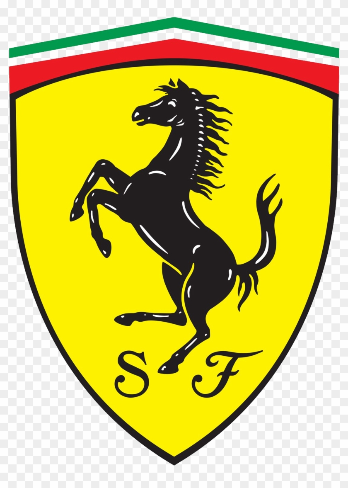

Ferraris are the Cream of the Crop, the Best of the Best, and what everyone hopes and wishes to have. If your neighbor has a Ferrari, they automaticaly become the coolest and quite possibly the best.
 Check out more about the company: Ferrari on wikipedia.
Classic Ferraris are some of the most Iconic and Beutiful cars ever built. The History of these cars is unimaginable. One of the most Iconic Ferraris ( the P4 ) ,is one of the most famous Le mans race cars ever made. The P4 is also one of the nicest looking ferraris ever made.
Examples of Classic Ferraris are: P4, 250 GTO, 330 GTS, and the 275 GTS.
Check out some more about the Ferrrari P4 on wikipedia
This is what Ferrari has come too. The Amazing, Beastly machines are as follows:
Check out Ferraris at This Link on wikipedia